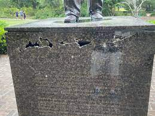

As mentioned in the main page,
we asked residents of Dorchester County, MD,
about their thoughts of Harriet Tubman.
In this page, we've listed the questions we asked, along with selected responses, for your viewing pleasure!
Question: So what do you know about Harriet Tubman?
"Harriet Tubman...? Oh yeah, Harriet Tubman! She's big here over in Dorchester County, everybody knows her. She's a hero.
She's done so much for the slaves and ending slavery and all that. She started the Underground Railroad, right? Anyway, there's tons of exhibits about her, she's the real deal.
I'm so proud to live in a County where I can say 'Yeah, Harriet Tubman was from here' to all my friends."
- Mike K.
"Harriet Tubman. What an amazing women. When I first learned about her in elementary school, I was amazed that such a women ever existed.
I mean, she was born here as a slave, and not only escaped, but also came back! Can you believe that? She came back multiple times, sacrificing her life,
out of the goodness of her heart. Bless her soul."
- Samantha Smith
"She was a slave and she helped free other slaves during the Civil War
in America, is that right? I'm actually from Europe, so I'm not too familiar with her. But I know there are a few museums and exhibits around here
that are dedicated to her, so I've picked up a few things."
- John Williams
Question: Have you ever noticed any signs of hate displayed toward Tubman, such as defaced portraits or the like?
"What... why would anyone deface Tubman? She's a hero, like I said.
To answer your question, no, we're pretty chill here. I can't imaging anyone being angry enough to damage one of her exhibits, at least not here.
But now that you mention it, I did read in the news a while back
about some guy who burned a bunch of Hillary campaign posters, but that's an exception. Nobody would vandalize Tubman like that."
- Mike K.
"What an absurd accusation!
No, Harriet Tubman is well-respected here. Please don't disrespect her like that."
- Samantha Smith
"I can't fathom anybody doing anything to disrespect this woman. I mean, she freed slaves. Who would be mad at someone who freed slaves?
And slavery ended in America a long time ago, so I don't see how anyone in America can still be that racist.
"
- John Williams
Unfortunately, there has, in fact been hate directed toward Tubman and/or her efforts.
For example, in 2018, a Tubman statue in Harlem was 'defiled' with a 'pink pussy hat' during a Women's march. And last year, in South Carolina,
a statue of Denmark Vesey, who 'allegedly planned an enslaved insurrection' in 1822, was vandalized.
Question: What do you make of these acts?
"Really? I would have never thought... I thought everyone liked Tubman, but I guess I was wrong. That's probably a one-off thing though. And as for that other guy from Denmark, never heard of him, that's not cool either.
But even though these may have happened, you should know that this doesn't represent us Americans as a whole. We're not violent people...
But now that you mention it, I did read in the news a while back
about some guy who burned a bunch of Hillary campaign posters here in Dorchester County, but that's probably also an exception."
- Mike K.
[She sighs for a moment before responding.]
"I am so disappointed with my fellow Americans for committing these horrible acts of violence. I knew
that some of the white people in this country weren't die-hard Tubman fanatics, but I still had faith that they would at least respect her and the anti-slavery effort.
This isn't the America I know and love..."
- Samantha Smith
"During a women's march, you say? I've never noticed any sexism around me, so that must be a Harlem thing.
I've not noticed any racism from the white folks in America either.
So for the other guy's statue, those were probably just some idiots just messing around. At least, nobody I know would do that. It's still a shame that happened though."
- John Williams

Photo of a vandalized Denmark Vesey statue in South Carolina.
Source: Count on News 2 (Local News)
Photo of a vandalized Denmark Vesey statue in South Carolina.
Source: Count on News 2 (Local News)
Question: Were you aware that it took more than three decades for Harriet Tubman to receive her pension from the U.S. Government, for her efforts during the Civil War?
"Why would they take so long to pay her? I mean, they freed the slaves and Reconstruction happened, right?
Shouldn't they have paid her after that, when Black and white people were finally equal?
That's some BS if you ask me." - Mike K.
"Yes, that is quite unfortunate. I do recall hearing something about this in elementary school,
but it still baffles my mind that the Union used her to help them achieve victory, but then not compensate her fairly.
They basically exploited her. I really hope the Government paid Black soldiers for the other major wars we fought in..."
- Samantha Smith
"Really? That's a shame. Not cool if you ask me, but I guess the American Government was still a lot more racist back then. Not so much now, I guess."
- John Williams
And that's all folks! Thanks for reading through our interviews. Hope you enjoyed!
Sources:
- https://amsterdamnews.com/news/2018/01/25/harriet-tubman-statue-defiled-pink-pussy-hat/
- https://www.nps.gov/people/denmark-vesey.htm
- https://www.counton2.com/video/community-activists-condemning-act-of-vandalism-against-denmark-vesey-statue/6677650/
- https://www.myeasternshoremd.com/dorchester_star/news/dorchester-resident-blames-trumps-message-for-campaign-sign-fire/article_66bcbfc1-bb4e-5e9a-83ae-4727062912ef.html
- https://www.myeasternshoremd.com/dorchester_star/news/what-your-textbooks-didnt-tell-you-about-harriet-tubman/article_3dc6e470-acec-5432-8fc3-52ee5b2f040e.html